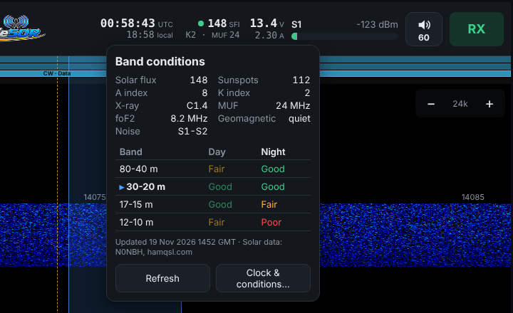
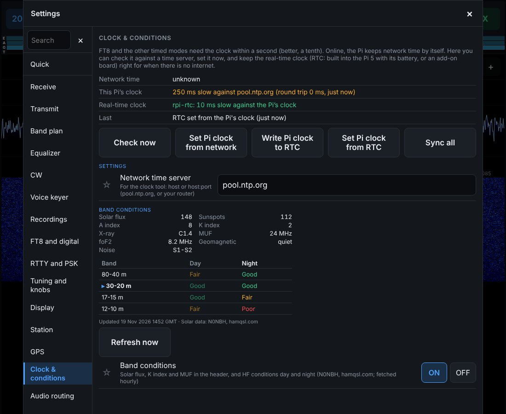

Clock and band conditions#
More → Clock & conditions has two tools: one checks and sets the clocks against network time, and one shows the current HF band conditions. The band conditions also have a small indicator in the header.
Band conditions#

The indicator sits next to the clock. The top line is the solar flux (SFI). The second line is the K index and the MUF (maximum usable frequency) in MHz.
- The dot shows how the band you are tuned to is doing right now: green is Good, amber is Fair, red is Poor. An empty dot means you are outside 80–10 m.
- The K index turns amber at 4 and red at 5 or more (a geomagnetic storm).
- The indicator dims when the data is more than 6 hours old.
- On a phone it shows only the dot and the solar flux.
Tap the indicator for the details: sunspots, A index, X-ray, foF2, the geomagnetic field, the expected noise level, and a day and night table for 80-40, 30-20, 17-15 and 12-10 m. Your band is marked with ▸, and the column for the current time is brighter. Day or night is worked out from where you are (the GPS fix, or My grid), not from the time zone of the device you are using. Refresh fetches the data again.
The data comes from N0NBH's solar feed (hamqsl.com). The radio fetches it once an hour, or 10 minutes after a failed try, and only while Band conditions is ON. The radio needs internet for this; your browser does not. If the radio can't reach the feed, the indicator stays hidden, and More → Clock & conditions says why.
| Setting | Console name | Default | Values | What it does |
|---|---|---|---|---|
| Band conditions | SOLAR | ON | ON, OFF | Solar flux, K index and MUF in the header, and HF conditions by day and night |
Clock tool#

FT8 and the other timed modes need the clock right to within about a second, and a tenth of a second is better. When the Pi is online it keeps network time by itself (systemd-timesyncd). The clock tool lets you see how good the time is, set it right away, and keep the real-time clock (RTC) right for when you have no internet.
The Pi 5 has an RTC built in; it keeps time while the Pi is off once you connect its battery. A Pi 4 needs an RTC add-on board.
The page shows:
- Network time: whether the Pi says it is synchronized.
- This Pi's clock: how far the clock is from the time server, measured directly with a few NTP packets. The fastest reply is used.
- Real-time clock: how far the RTC is from the Pi's clock, measured to about 10 ms. The RTC itself only counts whole seconds.
- Last: the result of the last action.
The buttons:
| Button | What it does |
|---|---|
| Check now | asks the time server; changes nothing |
| Set Pi clock from network | moves the Pi's clock to network time now |
| Write Pi clock to RTC | sets the RTC from the Pi's clock (do this when the Pi's clock is right) |
| Set Pi clock from RTC | takes the time from the RTC; for no internet and no GPS |
| Sync all | network time → the Pi's clock → the RTC |
Setting a clock is not allowed while you are transmitting. A clock that jumps during an FT8 transmission would put it out of step.
Out in the field, a GPS receiver sets
the clock too. The clock tool and the GPS use the same helper,
/opt/jeSDR/jesdr-settime, which the package's sudo rule allows. No other
root access is needed.
| Setting | Console name | Default | Values | What it does |
|---|---|---|---|---|
| Network time server | NTP_SERVER | pool.ntp.org | text | host or host:port; your router or a local server works too |
If it doesn't work#
- "did not answer (UDP 123 blocked or no internet?)": the network blocks NTP. Try your router's address as the server.
- "refused (rate limit)": the server is asking you to slow down. Wait a minute and try again.
- "RTC: none found": there is no
/dev/rtc0. A Pi 4 needs an RTC board and its overlay in/boot/firmware/config.txt. On an sBitx whose clock vanished after the I2C change, see Troubleshooting. - "holds no valid time": the RTC lost power, so its battery may be flat. Set the Pi's clock first, then Write Pi clock to RTC.
- "sudo refused" or "not installed": reinstall the jeSDR package.
Console#
solar the band conditions, one line plus the band table
solar refresh fetch them now
solar on|off the SOLAR setting
clock the clock status (network time, the Pi's clock, the RTC)
clock check ask the time server; changes nothing
clock set set the Pi's clock from network time
clock rtcwrite set the RTC from the Pi's clock
clock rtcread set the Pi's clock from the RTC
clock sync network time -> the Pi's clock -> the RTC